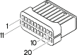

D2A Front / crossmember coupling ( FRONT )
- Path
- Electrical equipment > Connectors > D Intermediate couplings > D2 Front / crossmember coupling > D2A Front / crossmember coupling ( FRONT )
- Kind
- connector pinout (pin -> wire colour -> other end)
- Applies to
- all engines; all production periods
- Interactive page
- https://sloeber94.github.io/elrnDB-a156/en/#/3235490
Applies to: all engines; all production periods

Wiring | Colour |
|---|---|
NERO (black) |
Pin | Cable | Destination | |||
|---|---|---|---|---|---|
Sec.. | Colour | Nodo | Connect. | Pin | |
M (brown) | |||||
RV (red with green stripe) | |||||
LN (blue with black stripe) | |||||
LR (blue with red stripe) | |||||
AB (light blue with white stripe) | |||||
VB (green with white stripe) | |||||
H (grey) | |||||
HB (grey with white stripe) | |||||
G (yellow) | |||||
AR (light blue with red stripe) | |||||
HR (grey with red stripe) | |||||
BR (white with red stripe) | |||||
GR (yellow with red stripe) | |||||
Topics linked from this page (12)
- 12 FRONT
- B1C Junction unit ( FRONT )
- B98A Supplementary fuse box ( FRONT )
- D1 Front / dashboard connection
- D2A Front / crossmember coupling ( CROSSMEMBER )
- D4 Front/engine connection
- J17 Diesel preheating relay
- J31 Engine fan 2nd speed relay
- K31 Water in diesel filter sensor
- K64 Exhaust gas sensor
- M10A Engine management ECU ( ENGINE )
- M20 CODE control unit